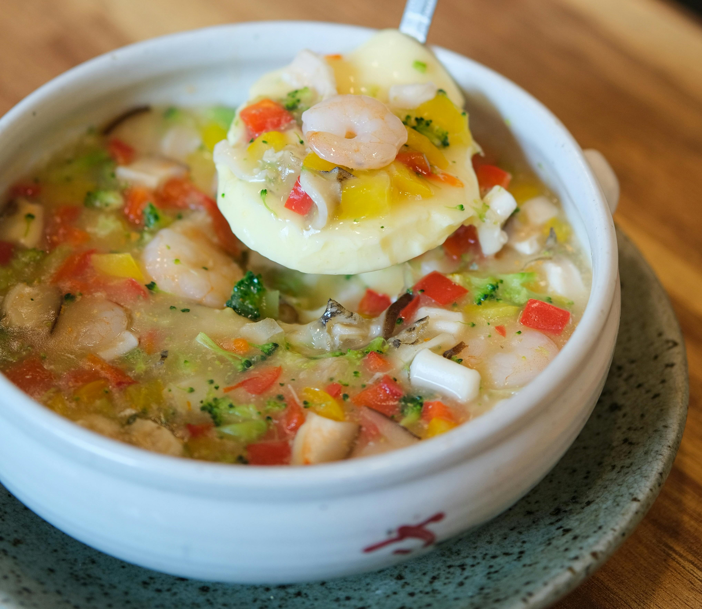

Ceviche
35 min
leicht
13.07.2024
| 400 g | frischer Kabeljau o.ä. Weissfisch |
| 4 | Limetten |
| 150 g | Tomaten |
| 1 | kleine rote Zwiebel |
| 2 | Stangen Staudensellerie |
| 5 | Stiele Koriander |
| 1 | grüne Chilischote |
| 1 TL | Weißweinessig |
| 1 TL | Olivenöl |
| Salz | |
| Pfeffer |
Zubereitung
Gesamtzeit ca. 35 Minuten
Für die Ceviche das Fischfilet kalt abspülen und mit Küchenpapier trocken tupfen, eventuell noch vorhandene Gräten entfernen. Das Filet in etwa 1 cm große Würfel schneiden und in eine flache Schüssel geben. Limetten halbieren und auspressen. Über die Fischwürfel geben und untermischen. Inzwischen die Tomaten in kochendes Wasser tauchen, mit einer Schaumkelle herausheben und kalt abschrecken. Tomaten häuten, halbieren, entkernen und in kleine Würfel schneiden. Zwiebel schälen, vierteln und in feine Streifen schneiden. Staudensellerie für die Ceviche waschen, putzen, gegebenenfalls entfädeln und fein würfeln. Chilischote halbieren, nach Belieben entkernen, waschen und in dünne Ringe schneiden. (Wer seine Ceviche sehr scharf mag, verzichtet auf das Entkernen und schneidet die Schote mitsamt der Kerne in dünne Ringe.) Den Fisch aus dem Kühlschrank nehmen. Tomatenwürfel, Zwiebelstreifen, Selleriewürfel, Korianderblättchen, Chiliringe, Essig und Öl zum Fisch geben und untermischen. Mit Salz und Pfeffer würzen. Die fertige Ceviche bei Raumtemperatur noch 15–20 Minuten ziehen lassen.
Rezept erstellt von
 Johannes N.
Johannes N.